FOX 9 · 2025
Trading their sleighs for bikes
News coverage of the Minneapolis ride.
Every December, a sea of Santas takes over the streets of Minneapolis, not in sleighs, but on bicycles.
Santa Cycle Rampage MSP began in 2013 with about ten friends bundled up and riding together. Today, nearly 200 Santas, elves, reindeer and other holiday characters join the free ride, decorating their bikes and rolling together from brewery to brewery.
There’s no race and no prize at the finish. Riders get outside, enjoy local craft beer, bring toys to donate and spread cheer across the city.
The 2026 brewery stops and gift donation location will be announced closer to ride day. Riders participate at their own risk and follow traffic laws.
The bikes, the costumes, the crowd and the people who started it.
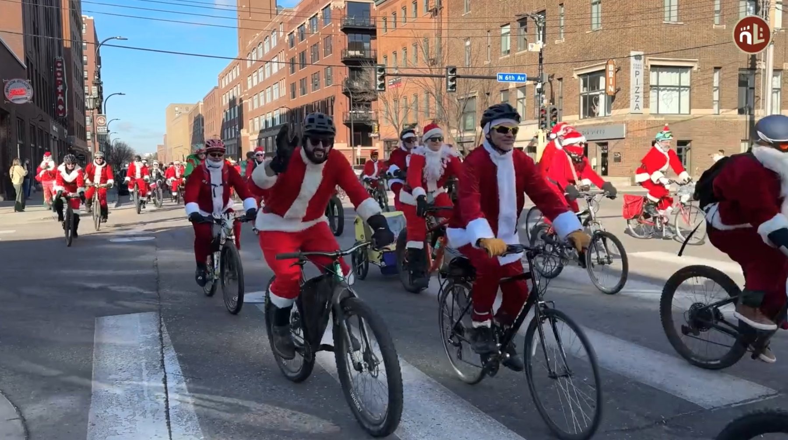
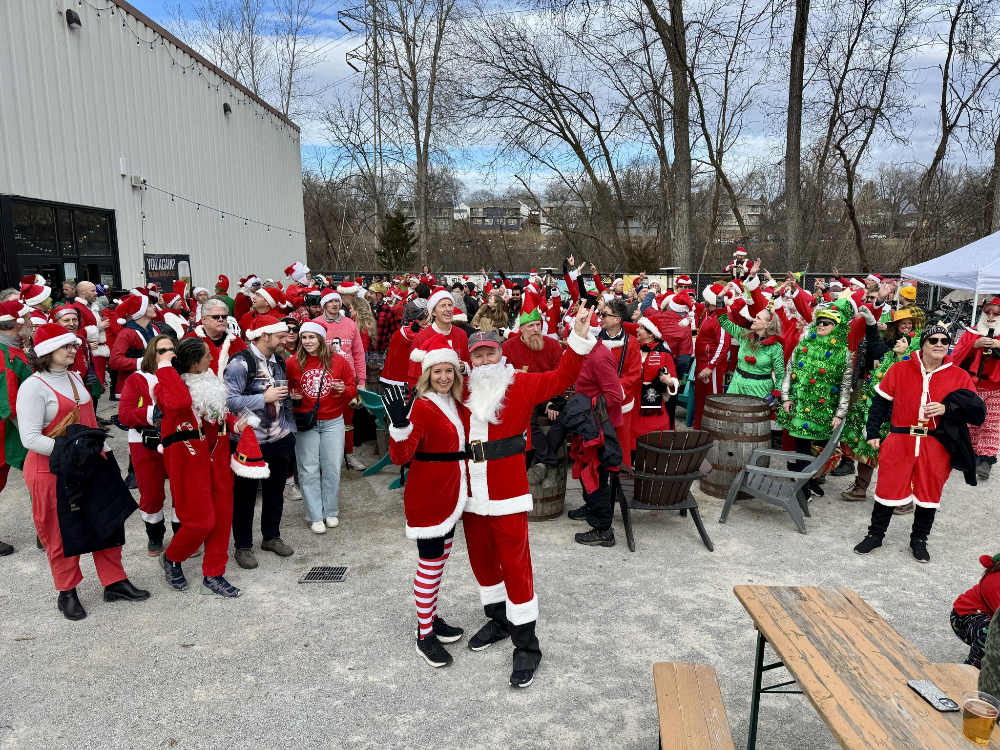
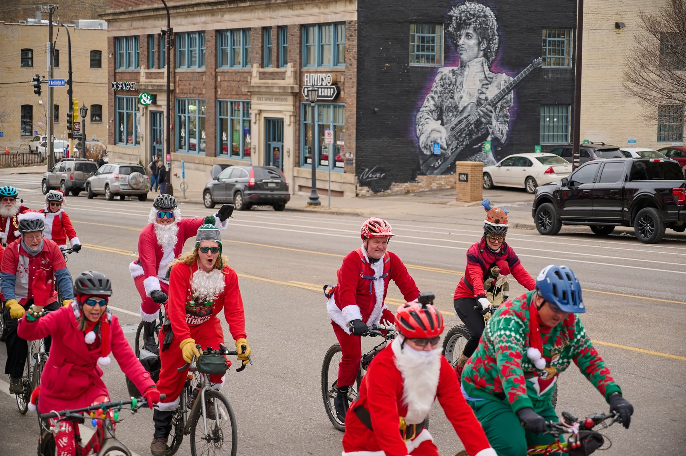
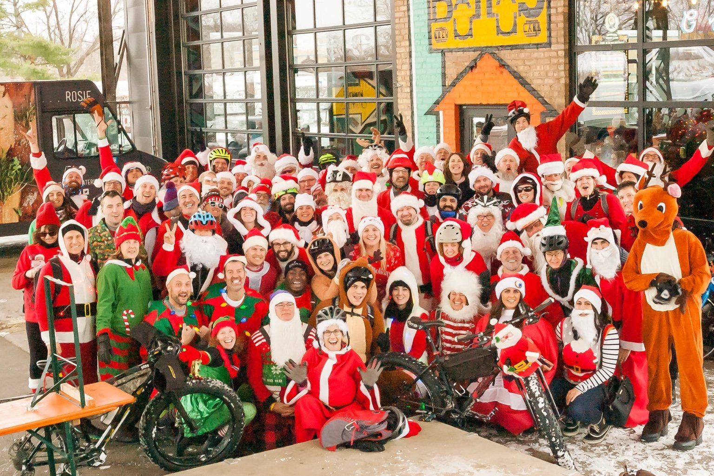
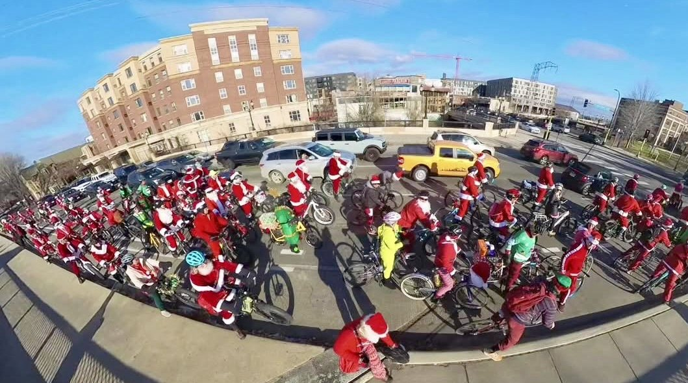
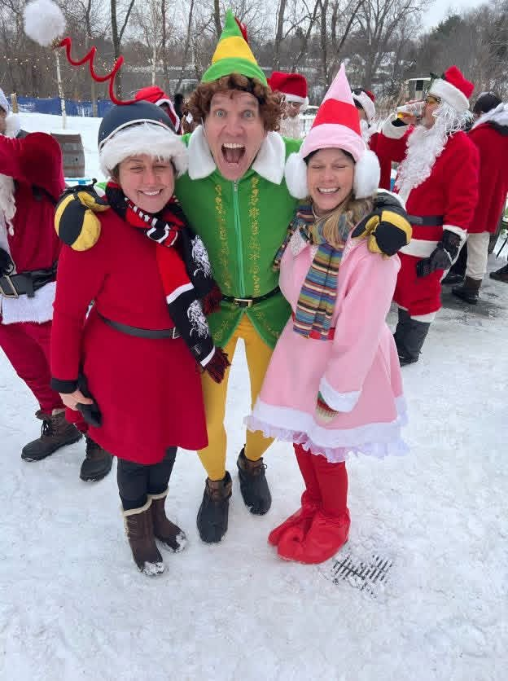
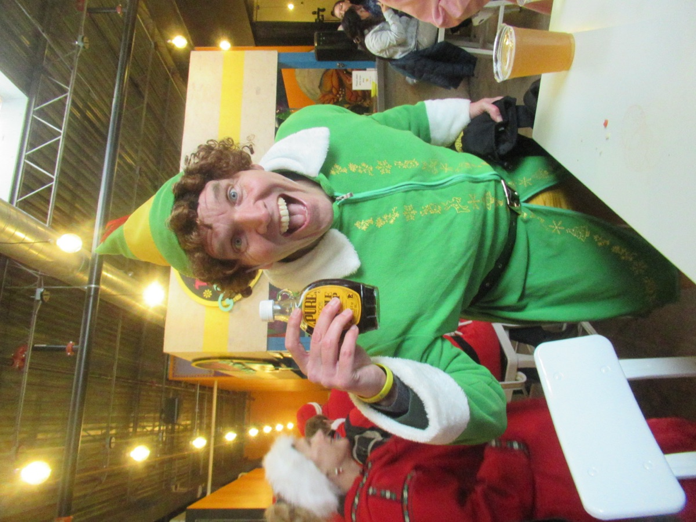
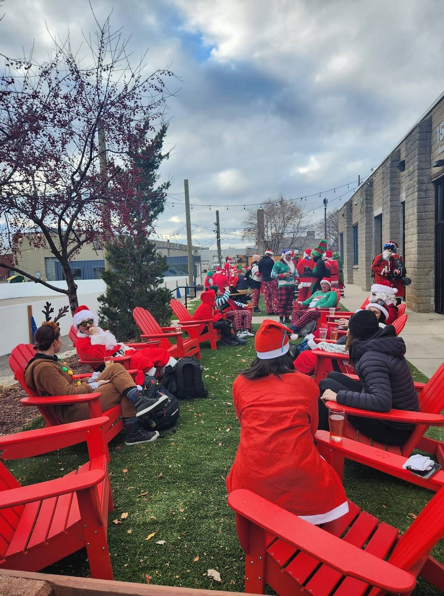
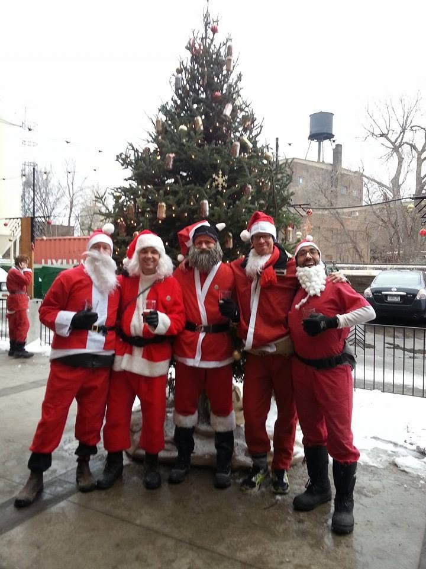
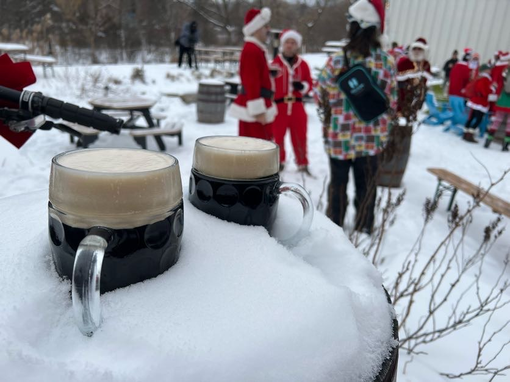
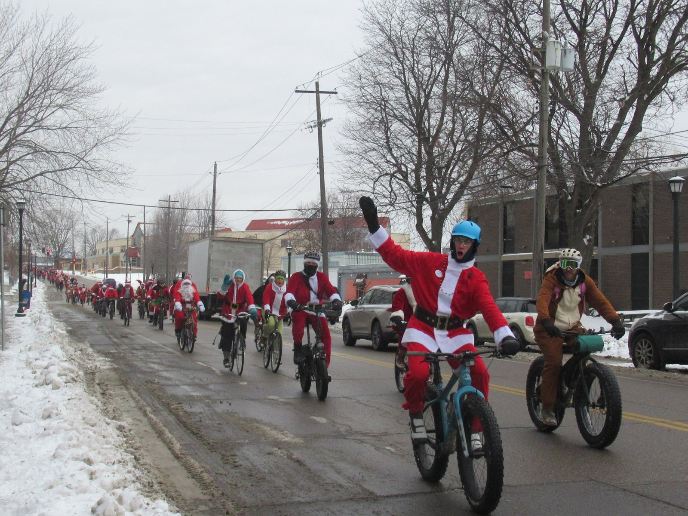
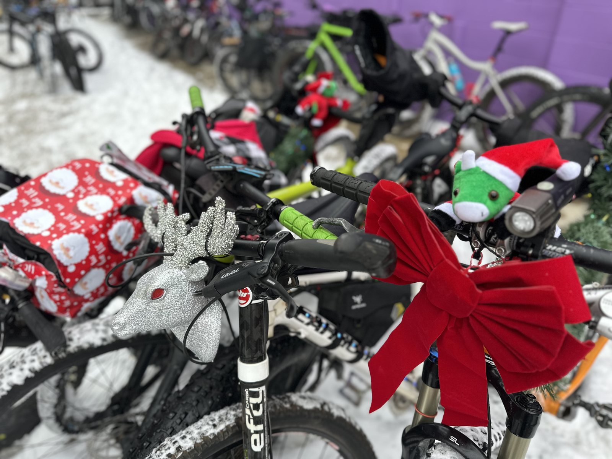
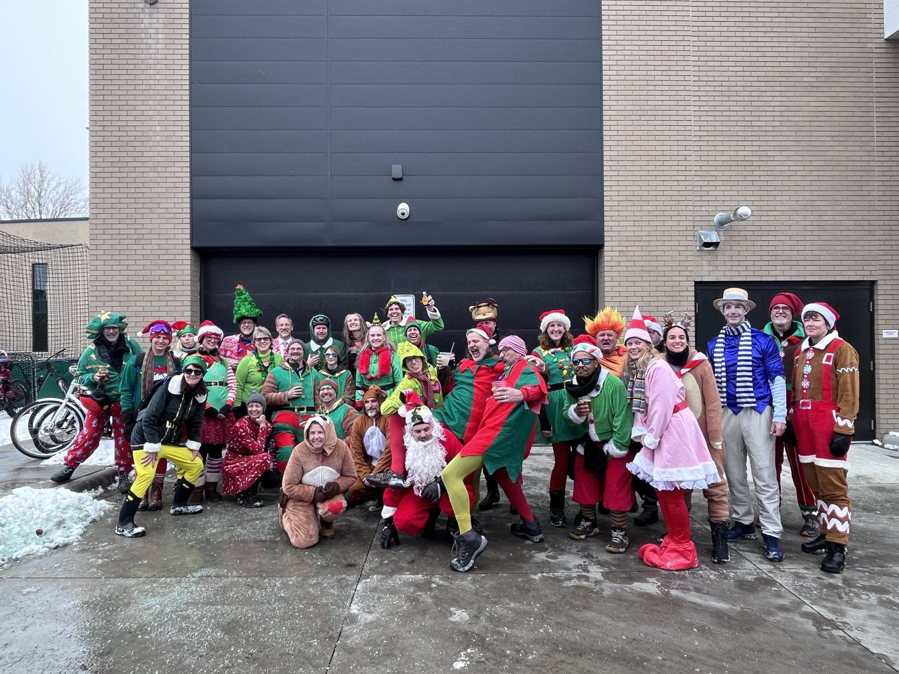
These image files are available for editorial review. Credit the named photographer for each credited image. For archive images without a named photographer, contact the organizers for credit and publication details. Original files may be available on request.
Santas on Minneapolis streets, costumed riders, snowy group cheers and the pack rolling together.
9.5-second silent website preview.
Footage: North Loop Neighborhood News
8-second silent website preview.
Together, the downloads include nine labeled 2025 clips totaling about 3 minutes 9 seconds. News broadcasts are excluded. Contact us for original source footage and attribution details.
A 32-second, lower-resolution look at the riders passing this Minneapolis landmark. This clip is separate from the downloadable B-roll packages.
News coverage of the Minneapolis ride.
News coverage of the Minneapolis ride.
Broadcast clips and linked coverage are for viewing here. Publisher footage is not included in the downloadable B-roll library.
Santa Cycle Rampage MSP is a free annual holiday bicycle ride through Minneapolis. Started in 2013 with about ten friends, it now draws nearly 200 riders in Santa suits and other festive costumes who ride between local breweries, bring toys to donate and spread cheer across the city.
For interviews, original files, photographer credits, publication permission or event details, email us.
santacyclerampagemsp@gmail.com ↗